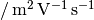
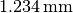
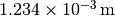
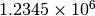
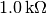
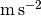

Functions to format numbers to support LaTeX
Generate text to label a number as a quantity expressed in a unit.
The unit is formatted with LaTeX as needed.
Arguments:
quantity: String describing the quantity
unit: String specifying the unit
This is expressed in extended Modelica notation. See unit2tex().
times: LaTeX math string to indicate multiplication
times is applied between the number and the first unit and between units. The default is 3/18 quad space. The multiplication between the significand and the exponent is always indicated by “
”.
per: LaTeX math string to indicate division
It is applied between the quantity and the units. The default is a 3/18 quad space followed by ‘/; and another 3/18 quad space. The division associated with the units on the denominator is always indicated by a negative exponential.
If the unit is not a simple scaling factor, then “in” is used instead. For example,
>>> label_number("Gain", "dB") 'Gain in $dB$'
roman: True, if the units should be typeset in Roman text (rather than italics)
Examples:
>>> label_number("Mobility", "m2/(V.s)", roman=True) 'Mobility$\\,/\\,\\mathrm{m^{2}\\,V^{-1}\\,s^{-1}}$'in LaTeX: Mobility 
>>> label_number("Mole fraction", "1") 'Mole fraction'
Generate text to write a quantity as a number times a unit.
If an exponent is present, then either a LaTeX-formatted exponential or a System International (SI) prefix is applied.
Arguments:
number: Floating point or integer number
unit: String specifying the unit
unit uses extended Modelica notation. See unit2tex().
format: Modified Python number formatting string
If LaTeX-formatted exponentials should be applied, then then use an uppercase exponential formatter (‘E’ or ‘G’). A lowercase exponential formatter (‘e’ or ‘g’) will result in a System International (SI) prefix, if applicable.
times: LaTeX math string to indicate multiplication
times is applied between the number and the first unit and between units. The default is 3/18 quad space. The multiplication between the significand and the exponent is always indicated by “
roman: True, if the units should be typeset in Roman text (rather than italics)
Examples:
>>> label_quantity(1.2345e-3, 'm', format='%.3e', roman=True) '1.234$\\,\\mathrm{mm}$'in LaTeX: 
>>> label_quantity(1.2345e-3, 'm', format='%.3E', roman=True) '1.234$\\times10^{-3}$$\\,\\mathrm{m}$'in LaTeX: 
>>> label_quantity(1.2345e6) '1.2345$\\times10^{6}$'in LaTeX: 
>>> label_quantity(1e3, '\Omega', format='%.1e', roman=True) '1.0$\\,\\mathrm{k\\Omega}$'in LaTeX: 
Convert a Modelica unit string to LaTeX.
Arguments:
unit: Unit string in extended Modelica notation
See also
Modelica Specification, version 3.2, p. 209 (https://www.modelica.org/documents)
In summary, ‘.’ indicates multiplication. The denominator is enclosed in parentheses and begins with a ‘/’. Exponents directly follow the significand (e.g., no carat (‘^’)).
times: LaTeX math string to indicate multiplication
times is applied between the number and the first unit and between units. The default is 3/18 quad space.
roman: True, if the units should be typeset in Roman text (rather than italics)
Example:
>>> unit2tex("m/s2", roman=True) '\\mathrm{m\\,s^{-2}}'which will render in LaTeX math as 